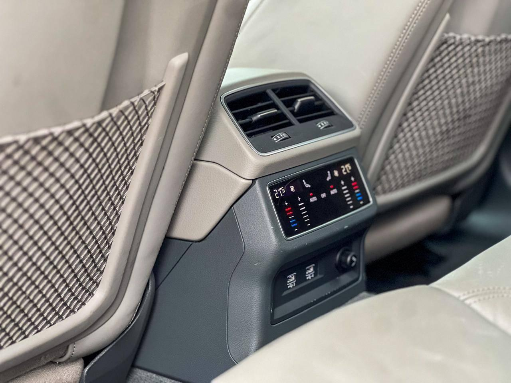
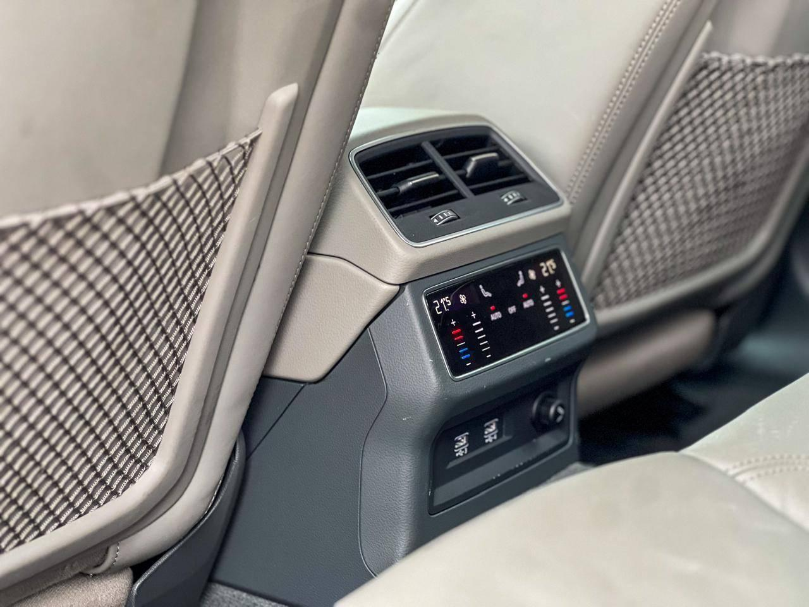

Audi RS7 Sportback
 

Ficha técnica completa
- Motor: 4.0 L V8 Biturbo
- Potência: 600 cv
- Tração: Quattro (AWD)
- 0–100 km/h: ~3.5 s
Dados principais
4.0 V8 | 600 cv | R$ 1.200.000
Descrição
O RS7 é um fastback de alta performance que une usabilidade diária, luxo e muita potência, com estabilidade e tecnologia de direção avançada.